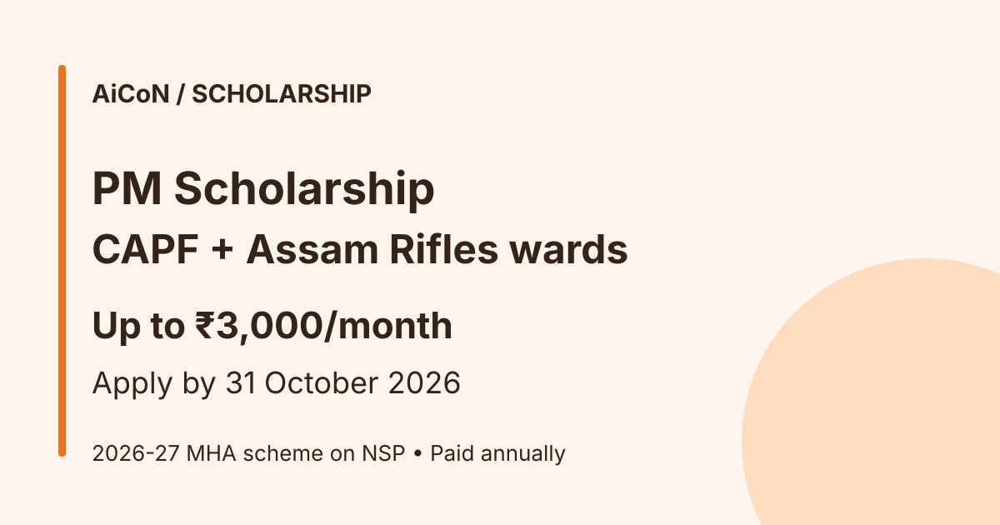

PM Scholarship for CAPF and Assam Rifles Wards 2026-27: up to ₹3,000 a month, apply by 31 October
The Prime Minister's Scholarship Scheme supports wards and widows of Central Armed Police Forces (CAPF) and Assam Rifles personnel who study a first professional degree. It pays ₹3,000 a month to girls and ₹2,500 a month to boys. Applications for 2026-27 are open on the National Scholarship Portal (NSP) until 31 October 2026.

What does it give?
₹3,000 a month for girls (₹36,000 a year) and ₹2,500 a month for boys (₹30,000 a year), paid annually after selection, for up to five years depending on the course. Applicants selected as fresh cases also get a personal letter from the Prime Minister.
Who can apply?
| Who | Eligible wards or widows of CAPF and Assam Rifles personnel in the listed service categories. There is no rank restriction for categories A-E. Retired/serving categories F/G are for personnel below officer rank; the guideline also includes wards of local-rank Assistant Commandants drawing Inspector salary without Assistant Commandant pay benefits. Wards of State or UT police personnel martyred in terror or Naxal attacks have a separate quota with no rank restriction. |
|---|---|
| Course | First professional degree such as BE, B.Tech, MBBS, BDS, BBA, BCA, B.Pharma, B.Sc (Nursing, Agriculture), B.Ed, MBA or MCA, recognised by the regulator. |
| Marks | At least 60% in the entry qualification. Renewal needs a pass with at least 50% each year. |
| Limit | Only two children per family. |
Key dates on NSP
| Scheme open | 1 June 2026 |
|---|---|
| Student application | Until 31 October 2026 |
| Institute verification and defective applications | Until 15 November 2026 |
| District, state or ministry verification | Until 30 November 2026 |
How are awardees picked?
The 2026-27 guideline lists category priority, marks in the entry qualification, higher candidate age, then lower parental rank. The guideline lists seven categories, from wards of personnel killed in action (Category A) down to wards of serving personnel (Category G, subject to availability). There are 2,000 fresh slots a year for CAPF and Assam Rifles wards, split equally between girls and boys, plus 500 for State police wards. A shortfall on one side is not moved to the other.
A careful checklist
- Keep your category-specific documents and attested entry-qualification mark sheet ready: service certificate for serving personnel; PPO/discharge book for categories A-F; disability certificate for B/D; death certificate for A/C; gallantry certificate for E; and an institute bonafide certificate. State/UT police applicants need the State Government certificate confirming death in terror/Naxal violence.
- Generate your One-Time Registration (OTR) on scholarships.gov.in using the applicable Aadhaar/eKYC process. Ensure your Aadhaar-seeded bank account is valid and active for direct payment. The 2026-27 guideline says NSP does not collect bank details in fresh applications and sends payment to the selected beneficiary's Aadhaar-linked account.
- Apply under the Prime Minister's Scholarship Scheme for CAPF and Assam Rifles before 31 October 2026.
- Ask your institute to verify before 15 November 2026.
We did not log in or apply. We read the live NSP scheme list and the 2026-27 MHA/WARB guideline published by CISF. Scholarship payment is annual, not a monthly bank deposit; selection and verification come first.
What is not covered?
This is for the listed uniformed/combat personnel categories, not civilian employees. Distance/correspondence courses, study abroad and diploma courses that do not lead to a degree are excluded. Master's courses are excluded except eligible MBA/MCA as a first professional course. Already using PMSS is an exclusion for another fresh award. Integrated courses have separate limits: the guideline covers B.Ed, not BA+B.Ed, and limits integrated ME/M.Tech/M.Pharma support to the initial three/four years.
The scheme is merit-based. The 2026-27 guideline permits one merit-based scholarship and one welfare-based scholarship, not more than one in either category. Check both schemes' rules before combining awards.
Frequently asked questions
Is there a scheme for school students?
No. This one is only for first professional degree courses.
Does 60% guarantee selection?
No. It is an entry threshold. Category priority, merit, verification and limited slots still apply.
Is renewal automatic?
No. Each later academic year must be passed with at least 50% and renewal documents must be verified. A one-year grace period for delayed renewal may be considered; do not treat that as an extended fresh-application deadline.
What changed from older guidance?
This guide now uses the official 2026-27 guideline rather than older 2020-21/2022-23 PDFs. It includes current ranking, Aadhaar-linked payment and scholarship-combination rules. Dates were checked on NSP on 10 October 2026.
Sources: NSP scheme list, 2026-27 MHA/WARB guideline published by CISF. Checked 10 October 2026. This is an AiCoN explainer, not a government publication.